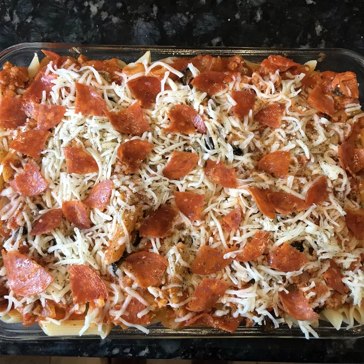

Pizza Pasta

Description
This versatile one-dish pizza pasta bake uses your favorite pizza ingredients like bell pepper, sausage, pepperoni, and olives.
Ingredients
- 1 pound any shape pasta (such as penne, farfalle, elbows)
- 1 pound Italian sausage
- 1 green bell pepper, diced
- ½ sweet onion, diced
- 4 ounces sliced pepperoni, cut into bite-sized pieces
- 2 ounces sliced black olives
- 2 ounces cream cheese
- 1 (24 ounce) jar RAGÚ® Old World Style® Traditional Sauce
- 2 cups shredded mozzarella cheese
- ½ teaspoon Italian seasoning
Steps
- Preheat the oven to 350 degrees F (175 degrees C). Lightly spray a 9x13-inch baking dish with cooking spray.
- Bring a large pot of water to a boil and cook pasta according to package directions.
- While pasta is cooking, cook sausage in a skillet over medium heat until just lightly pink. Add green bell pepper and onion to sausage. Continue cooking until meat is cooked through. Add pepperoni, olives, cream cheese, and sauce. Cook over low heat until heated through and cheese has melted.
- When pasta is done, drain and return to the pot. Stir sausage mixture into pasta; stir to coat.
- Add 1/2 of the pasta mixture to the prepared baking dish. Top with 1/2 of the mozzarella cheese. Spread remaining pasta over cheese and top with remaining mozzarella cheese. Sprinkle with Italian seasoning and place a few pepperoni slices on top, if you like.
- Bake until cheese has melted and pasta is heated through, about 15 minutes.